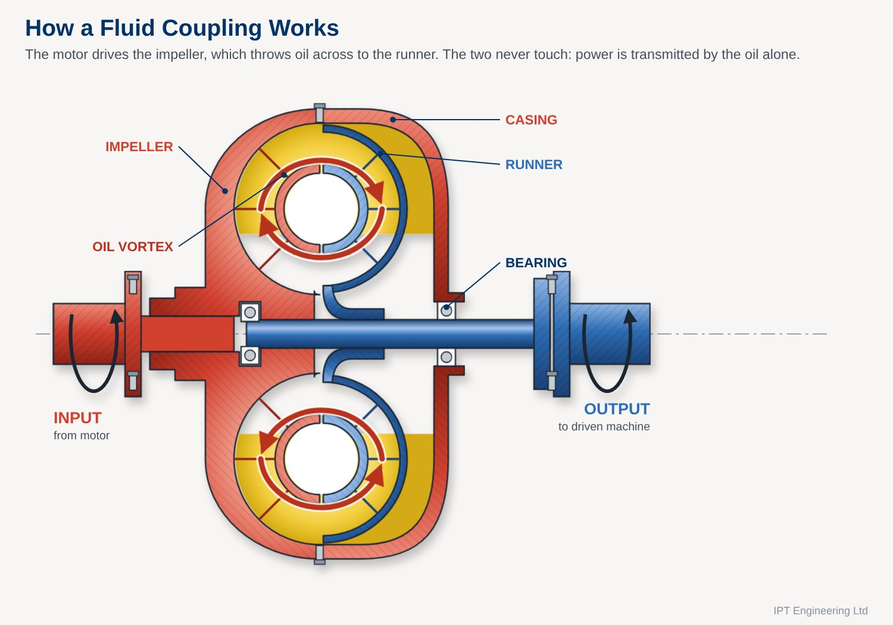

How Fluid Couplings Work
Fixed-fill, delay-chamber and variable-speed couplings explained
Fluid couplings are mechanical devices fitted between a motor or engine and a driven machine. They are commonly used on equipment such as conveyors, crushers, mills, fans, pumps and propeller-driven systems.
The original concept of the fluid coupling was conceived by Hermann Föttinger. Over time, this principle developed into the wide range of modern fluid coupling designs used throughout industry.
A primary function of a fluid coupling is to provide the motor with a virtually no-load starting condition, allowing the driven machine to be accelerated progressively. The coupling also provides an important safety element within the drivetrain should an overload or failure occur elsewhere in the system.
Regardless of manufacturer or design, a fluid coupling fundamentally consists of four elements:
- Impeller: connected to the driving machine
- Runner: connected to the driven machine
- Working fluid: transmits torque through hydrodynamic action
- Casing: surrounds the impeller and runner and contains the working fluid
There is no physical mechanical connection between the impeller and runner. Power is transmitted by the movement of the working fluid. The basic power path can therefore be represented as:
Motor or engine → Impeller → Working fluid → Runner → Driven machine

Fluid couplings can broadly be divided into two categories: fixed-fill couplings and variable-speed couplings.